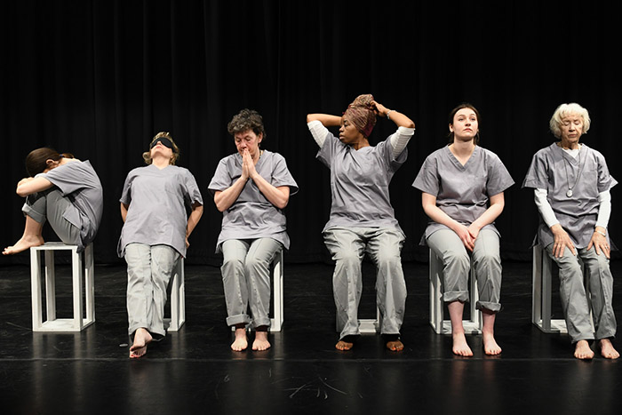

	<div id="oneCol" class="row">
		<div class="large-12 columns">
			<div class="medium-10 medium-offset-1 end columns">
			  <h3>Underconstruction Theatre Company Oxford</h3>
			  <p>UnderConstruction is an Oxford-based theatre company, making devised, site-based performance since its formation by British artist Lizzy McBain and Brazilian artist Tania Grillo in 2006. Their mission is to revitalise forgotten, neglected and underused sites using storytelling, performance and multi-media to explore where historical and fictional worlds meet.</p>
			</div>
			<div class="center">
				<a href="./underconstruction-theatre-01.html" title="View next Underconstruction Theatre Company photograph"></a><br />
				6 Women a play by Gaye Poole told extraordinary stories from ordinary women. "Taking you movingly and gently to the heart of what it means to be a woman". Images were taken during workshops and rehearsals over a two year period.<br>
				<span class="links"><a href="./underconstruction-theatre-01.html">next</a></span>
	 		 </div>
		</div>
	</div>


